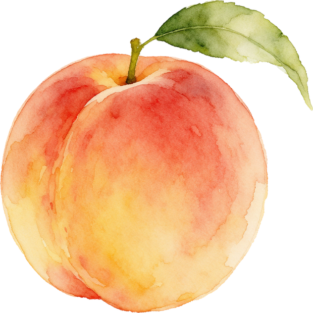
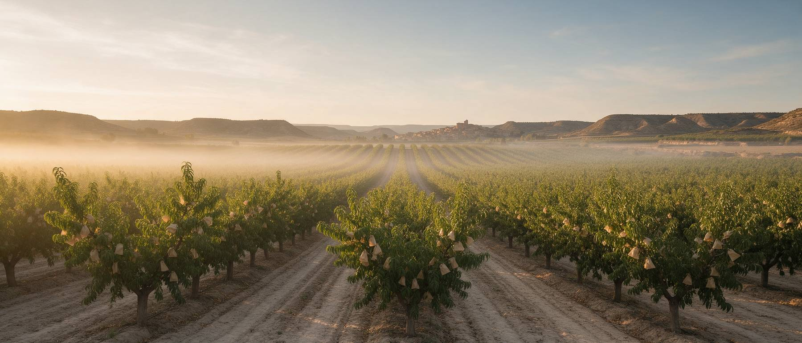
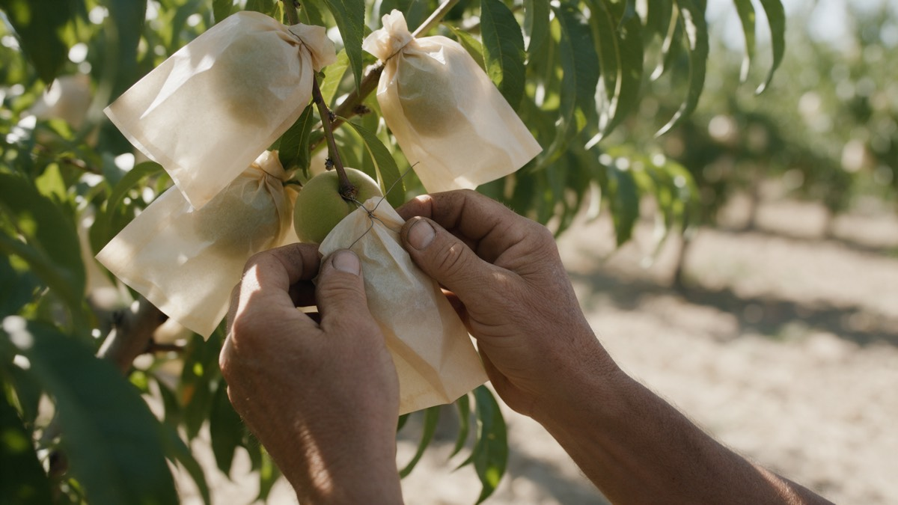

Der Spätpfirsich aus Aragón. Jede Frucht von Hand eingetütet, am Baum gereift, in 48 Stunden bei dir zu Hause.

Acht bis zehn Wochen im Jahr. Danach ist der Baum leer.
- 12° Brix garantiert
- 48 h vom Baum bis zur Tür
- g.U. geschützte Ursprungsbezeichnung
- 49 € versandkostenfrei ab
Drei Arten, den Sommer zu behalten
Frisch in der Saison, im Glas das ganze Jahr, als Geschenk wann immer du willst.
Vier Lieferungen im Jahr, eine pro Jahreszeit
Der Baum trägt acht Wochen. Die Speisekammer das ganze Jahr.
Konfitüre, Spalten zum Backen und die Karte für die Ernte-Reservierung.
Die frische Kiste mit 3 kg, mit Vorrang beim Versand.
Pfirsich im Glas und das Rezept der Saison.
Konfitüre, Trockenpfirsich und die Verwertungs-Anleitung.

Jeder Pfirsich bekommt seine eigene Tüte
Im Juli, wenn die Frucht noch grün ist, wird jeder einzelne Pfirsich von Hand eingetütet. Kein anderer Pfirsich in Europa wird so behandelt.
- 2.000Früchte pro Tag und PersonSo viele schafft ein Arbeiter. Deshalb ist diese Frucht keine Massenware.
- 0Behandlung nach der ErnteDie Tüte schützt vor der Fruchtfliege. Dadurch braucht es keine Chemie.
- 12°Brix, am Baum gemessenBrix misst den gelösten Zucker. Geerntet wird reif, nicht grün.
Warum schmeckt spanisches Obst im Supermarkt nach nichts?
Weil es grün gepflückt wird. Damit es die Reise übersteht und zwei Wochen im Regal liegen kann, wird es geerntet, bevor es reif ist. Zucker bildet sich aber nur am Baum. Was im Kühlhaus nachreift, wird weich, nicht süß.
Genau deshalb schmeckt das Obst im Urlaub anders als das gleiche Obst zu Hause. Es ist nicht die Sonne, es ist der Erntezeitpunkt.
Unsere Antwort darauf
- 1Reif geerntetWir ernten mit mindestens 12 Grad Brix, nicht nach Kalender.
- 2Direkt versendetKein Zwischenlager, kein Großhandel. Vom Tal zu dir.
- 3Kurze SaisonAcht bis zehn Wochen im Jahr. Danach gibt es sie im Glas.
Die Ernte beginnt Ende August
Reservier deine Kiste jetzt, zahl erst bei Versand. Wer reserviert, bekommt in den ersten drei Tagen geliefert.
Platz sichern